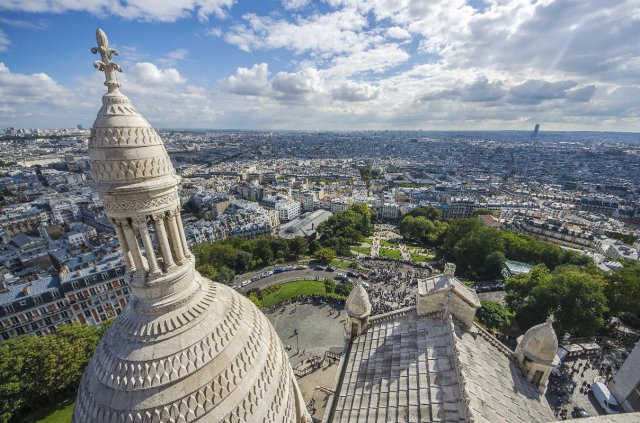
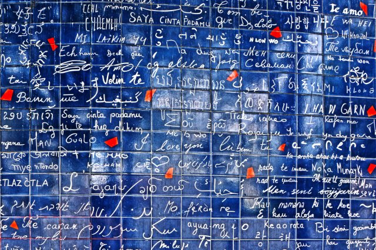
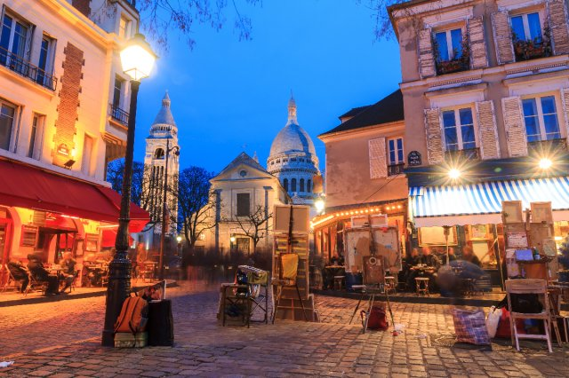
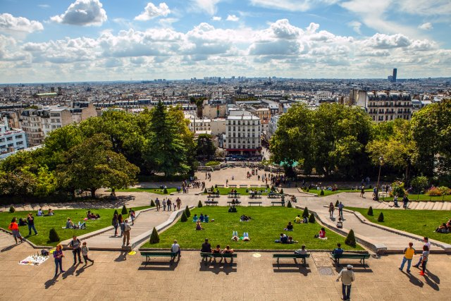

몽마르뜨 언덕
Montmartre
- 
- 
- 
- 
주소
정보
교통
즐길거리
Sqaure Louise Michel, 6 Place Saint-Pierre, 75018 Paris
속세의 형식적인 삶을 거부하고 진정한 자유를 꿈꾸던
예술가들의 고향.
순례지로 중요성을 인정받는 곳이기도 하다.
밤이 되면 노란 조명이 켜지고 북적이는 노천카페의
분위기가 너무나도 낭만적인 곳이다.
지하철: 메트로 1,2,6호선 Charles de Gaulle Etoile역
파리에서 가장 높은 곳에 위치한 사크레 콰르 대성당
돔의 전망대에 올라보는 것을 추천한다.
데르트르 광장에서 초상화를 그려 추억을 남겨보자.
세계 각국의 언어로 '사랑해'가 쓰여있는 사랑해벽.